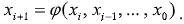

|
Моделювання випадкових явищ |
Способи формування послідовностей випадкових чисел, що рівномірно розподілені в інтервалі числової осі (0,1) |
|
Для моделювання випадкових явищ використовуються:
– випадкові події; – випадкові величини; – випадкові вектори; – випадкові функції. Початковим матеріалом для моделювання випадкових явищ будь-якої природи з різними ймовірнісними характеристиками служать випадкові числа, що мають рівномірний розподіл в інтервалі числової осі від 0 до 1. Послідовності таких чисел прийнято позначати символом (xi). Іншими словами, (xi) – це послідовність значень випадкової величини, розподіленою зі сталою щільністю в інтервалі від 0 до 1. |
Три способи:
– апаратний (фізичний); – табличний (файловий); – алгоритмічний (програмний).
Алгоритмічний спосіб формування послідовностей випадкових чисел, рівномірно розподілених в інтервалі числової осі (0, 1), заснований на використанні рекурентного співвідношення:

Кожне (i+1)-е число послідовності обчислюється в результаті
перетворень попереднього i
-го числа або групи попередніх чисел. Початкове число 0x задається дослідником. Числа,
що отримуються алгоритмічним способом, насправді випадковими не є, оскільки для їх
обчислення використовуються цілком детерміновані алгоритми. Тому такі числа прийнято
називати псевдовипадковими. Послідовності псевдовипадкових чисел є періодичними. Кількість різних чисел в послідовності називається періодом. Кількість випадкових чисел, необхідних для відтворення процесу функціонування об'єкту моделювання, не повинна перевищувати періоду використовуваної послідовності псевдовипадкових чисел. З урахуванням цієї вимоги вибирається метод формування такої послідовності. Найширше в практиці моделювання використовуються наступні алгоритмічні методи формування послідовностей псевдовипадкових чисел в інтервалі (0,1): – мультиплікативний метод (метод вирахувань); – метод підсумовування. |